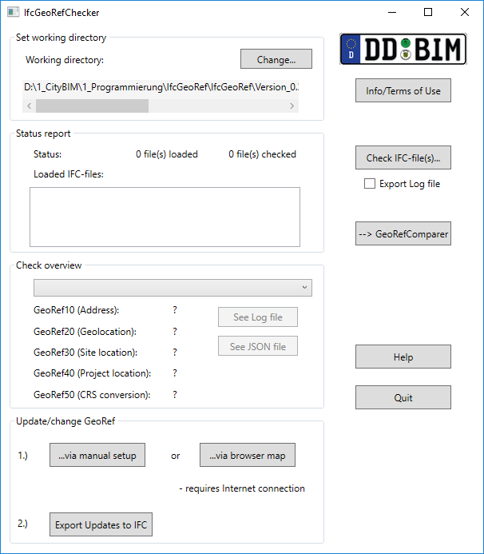

This document introduces a new concept for the evaluation of stored georeferencing attributes in IFC files. It also provides description of the functionality of the introduced IFCGeoRefChecker tool in this document.
Making geodata available in a BIM project is an important task for all kind of personnel involved in BIM processes. Attributes for location and rotation towards the north direction should be stored in a correct manner for further project steps. The common open data exchange format in the field of BIM are the Industry Foundation Classes (IFC). There are some ways described by the official IFC documentation to store georeferencing attributes in an IFC-file. The official IFC documentation and standard allow multiple ways to store georeferencing attributes in an IFC-File.
Our concept classifies the different ways of georeferencing in so called Levels of Georeferencing (LoGeoRef).
Alltogether five level (10, 20, 30, 40 and 50) are available describing how the georeferencing of an object can be applied. The higher the LoGeoRef is the more quality of georeferencing can be expected by the designated file. It should be noted that information from higher levels do not automatically include information out of lower levels and vice versa. Each level comprises their own IFC-schema attributes and is standing on its own.
Consequently, an IFC-file can fulfill conditions of more than one “Level of GeoRef”.
The following subsections contain an explanation for every level of georef and provide the particular extract of the IFC schema that has to be fulfilled for the classification into the respective level.
The simplest way to describe where a site or a building is located is to add an address to the BIM project. Advantages are the easy human readability and the simple understanding of such an address. For georeferencing purposes, it is only a rough approximation for setting the location of the site or the building. Nevertheless, it can be helpful for integrating GIS data like adding data of surrounding city models.
The IFC schema provides an entity for storing address data in an IFC-file. The entity IfcPostalAddress contains multiple attributes including address lines, postal code, town, region and country. For a correct assignment to a spatial structure element, the IfcPostalAddress object has to be referenced by either IfcSite or IfcBuilding. Both entities include a certain attribute for address referencing.
For better understanding, please refer to the following class diagram:

A corresponding IFC-file with fulfilment of the “LoGeoRef10” conditions would contain the following instances:

The file contains an instance of IfcPostalAddress with information for georeferencing highlighted in the green frame. In this case the address is referenced by an instance of IfcSite and an instance of IfcBuilding (red frames). Please note that for fulfilling LoGeoRef 10 the IfcPostalAdress does not has to be referenced in both entities.
There is another relative simple way for georeferencing IFC-files. For compliance with LoGeoref 20, instances of IfcSite must contain values for their attributes RefLatitude and RefLongitude. As their names suggest an IFC model is able to store one single point coordinate with longitude and latitude directly in IfcSite. According to the IFC schema definition its values are geographic coordinates with respect to the World Geodetic System (WGS84 with EPSG:4326). Besides of that, it is also possible to store a value for the elevation in the corresponding attribute RefElevation. By definition, RefElevation should have a metric value related to a locally used datum relative to the sea level. However, there is no default possibility given to write the datum´s name explicit in the file. This also applies to latitude and longitude with its usage of WGS84.
For better understanding, please refer to the following class diagram:

The corresponding IFC-file only needs to contain an instance of IfcSite with the attributes RefLatitude / RefLongitude and RefElevation.

Latitude and longitude are stored as comma-separated integers fulfilling the conditions of the IFC-type IfcCompoundPlaneAngleMeasure. There can be three or four integers describing the required angle. The first value stands for the degree, the second for the minutes, the third for the seconds and the optional fourth for the millionth-seconds part of the angle. This shows that it is possible to set a point coordinate for IfcSite in a very accurate way. LoGeoRef20 does not include possibilities to store any rotation parameters, though.
This level describes the possibility to store the location of any IfcSpatialStructureElement directly in its LocalPlacement-object. Subclasses that can be instantiated in an IFC-file are IfcSite, IfcBuilding, IfcBuildingStorey or IfcSpace. As an important constraint, this level applies only to those spatial structure elements that do not have a relative placement to another spatial structure element. Therefore, the attribute PlacmentRelTo of the IfcLocalPlacement-object belonging to the IfcSpatialStructureElement should be empty. Usually this is the same spatial element which is also the uppermost element in the spatial hierarchy. According to the IFC schema definition this should always be an IfcSite-object.
Since the attribute RelativePlacement is of type IfcAxis2Placement3D, there are possibilities to store X, Y and Z coordinates for the location and vector components for an angle specification for a rotation of the X-axis and the Z-axis.
This makes it possible to store both georeferenced coordinates in the attribute Location indicating metric values in an arbitrary coordinate reference system and to store any rotation values via setting the vector components of the specific Axis respectively RefDirection attribute.
For better understanding, please refer to the following class diagram:

A corresponding IFC-file contains the following instances for satisfying this level:

The example above contains the definitions for an IfcSite-object which is georeferenced by an Location stored in IfcCartesianPoint. The file also applies values for a rotation of the X-axis (#69184). There is no rotation of the Z-axis but nevertheless the default direction must be stored in an IfcDirection instance (#69183). Please keep in mind that this level also contains no information whether the stored location and rotation is local or referred to a global coordinate reference system.
This level provides two main attributes to store georeferencing attributes in an IFC-file. Both WolrdCoordinateSystem and TrueNorth are part of the IfcGeometricRepresentationContext of an instantiated IfcProject. According to the IFC schema defintion every IFC-file contains an IfcProject and also a referenced IfcGeometricRepresentationContext with the attribute ContextType given as “Model”.
It is also possible to set up a coordinate system for the 3D-model context of the project via the attribute WorldCoordinateSystem.
The other attributes follow the same rule as mentioned in previous LoGeoRef 30. A location stored in an instance of IfcCartesianPoint and optional directions for X- and Z-axis, stored in instances of IfcDirection.
As a second main attribute there is the TrueNorth attribute. This attribute is used in case that the Y-axis of the given WorldCoordinateSystem does not point to the global northing. That means that this is another way to set a rotation for the XY-plane. In consequence, the corresponding IfcDirection can only store two vector components.
For better understanding, please refer to the following class diagram:

IFC-files with instances from above could look like the following:

In the example the IfcGeometricRepresentationContext contains a georeferenced location in IfcCartesianPoint. Its directions are optional and not explicitly given. That means they use their default directions for X-axis (1/0/0) and Z-axis (0/0/1). In addition, there is a rotation towards the XY-plane given in IfcDirection (#91).
The example shows the possibility to store georeferenced coordinates and rotations for the whole project context and not only for a certain (spatial) element. Furthermore the TrueNorth attribute provides the option to set a distortion directly relative to the north direction.
However, those options could be confusing and redundant when direction attributes are set at WorldCoordinateSystem and TrueNorth.
This level provides the highest quality regarding the georeferencing of an IFC-file. It is only available in IFC-files since IFC schema version 4. So it is important to note that no IFC-file previous to IFC4 can fulfill this level.
With IFC schema version 4 buildingSMART introduced some entities especially for georeferencing purposes. In particular, there is a class named IfcMapConversion where the offset between project coordinate system and the global origin of a coordinate reference system should be stored within the attributes Eastings, Northings and OrthogonalHeight for global elevation. The rotation for the XY-plane will be stored using the attributes XAxisAbscissa and XAxisOrdinate. Each attribute stores one vector component of the resulting angle (unlike the TrueNorth attribute with both vector components, see LoGeoRef 40). With the attribute Scale a distortion of distances can be introduced.
The connection to the project is made by the attribute SourceCRS that inherited from IfcCoordinateOperation. As a constraint of this level SourceCRS must be of type IfcGeomtricRepresentationContext. TargetCRS is consequently the Coordinate Reference System that should apply to the project. For describing these systems, IFC4 is able to store data regarding the CRS via an instance of IfcProjectedCRS. By schema definition it is recommended to specify the CRS with an EPSG-code. However, it can also be specified via the other attributes of this entity.
For better understanding, please refer to the following class diagram:

A corresponding IFC-file of schema version 4 contains the following instances for satisfying LoGeoRef50:

The sample file shows that this level does not need any Placement-entities but uses extra entities for georeferencing. So it is possible to handle conversions between a local enginering system and a coordinate reference system.
This application serves as lightweight checking tool for the LoGeoRef concept outlined above. It is written in C# using the .NET Framework 4.6.

The tool is able to read and check all attributes with georeferencing content in the choosen IFC-file.
At first, it is recommended to set the working directory to a directory where you have the permission to write and delete files. The checker tool will need these permissions for full functionality.
The application is able to check more than one IFC file in one action. Via click on “Check IFC-files…” you need to select the file(s) in the file dialog that should be checked against the LoGeoRef. If you want to export a protocol file to your working directory just tick the checkbox for “Export Log file” before starting the import/check process.
Depending on the size of the file(s), the import process could take some time. If the files are successfully loaded the names of the input files will appear in the listbox under the “Status report” group box. There is also a status label for import which will show the number of imported IfcModels.
Checking results are visible like follows:
If the application is not able to import a certain file it will show a error message with the reason why it can not be imported. In this case you should check the syntax of the file with an appropriate IFC file checker.
The program window after the check could look like this:

Every log file begins with a title with the naming of the checked IFC-file and date / time in brackets.
Examination of "Projekt.ifc" regarding georeferencing content (04/16/2018, 14:19:40)
--------------------------------------------------------------------------------------
--------------------------------------------------------------------------------------
In the next sections, the results of each LoGeoRef check are presented sequentially.
The logfile contains the check results for all possible adresses reference by IfcSite or IfcBuilding. Therefore it is possible to evaluate all Site- and Building-objects regarding their address-attribute. Some positive results for LoGeoRef 10 check will look like this:
Existing addresses referenced by IfcSite or IfcBuilding
----------------------------------------------------------
Found address referenced by #110=IfcBuilding:
#106= IfcPostalAddress
Address: Reichenbachstrasse 1
Postal code: 01069
Town: Dresden
Region: Saxony
Country: Germany
LoGeoRef 10 = True
The example above shows a well-filled IfcPostalAddress instance (German example) of the examined file. Please notice that this tool will not check the content for its plausibility. It is also possible that the address information will be incomplete caused by the exporting software or incomplete data given by the user of the exporting BIM software.
The result of the check will be true if there is an IfcPostalAddress referenced by IfcSite or IfcBuilding. This could be comprehensive like the example but can be also very vague for instance if only the country is given.
Some positive results for LoGeoRef 20 will look like this:
Geographic coordinates referenced by IfcSite (Latitude / Longitude / Elevation)
--------------------------------------------------------------------------------
Referenced in #445= IfcSite
Latitude: 51.0339851377778
Longitude: 13.7339153288889
Elevation: 115.1
LoGeoRef 20 = True
The result of the check will be true if there is an IfcSite-object in the IFC-file that includes attribute values for RefLatitude and RefLongitude. In consequence, the elevation must not be given for a true check result but will be read by the checking tool.
There is no statement regarding units of the written values because IFC schema does only implicit regulate this units in its documentation. Usually the Latitude and Longitude should be geographic coordinates towards WGS84 with units degree. The elevation should have a metric value related to a locally used datum relative to the sea level.
The validity of those regulations for the certain IFC-file can not be guaranteed by this checker, so the units are not mentioned here.
A result of checking for LoGeoRef 30 could look like the following example:
Local placement for the uppermost IfcSpatialStructureElement (usually an instance of IfcSite)
The placement of those elements is only relative to the WorldCoordinateSystem (see LoGeoRef 40) but not to other IFC-Elements
-------------------------------------------------------------------------------------------------------------------------
Referencing Element: #9094= IfcSite
Placement referenced in #83= IfcAxis2Placement3D
X = 0
Y = 0
Z = 0
Rotation X-axis = (1/0/0)
Rotation Z-axis = (0/0/1)
LoGeoRef 30 = False
Referencing Element:#77324=IfcVirtualElement
Placement referenced in #77322=IfcAxis2Placement3D
X = 71.29499998465
Y = 4.01
Z = 0
Rotation X-axis = (-8/-50/0)
Rotation Z-axis = (0/0/1)
LoGeoRef 30 = True
This example shows a possible result of LoGeoRef 30 check. At first, the check will determine all elements in the IFC-file that have no placement relative to another element´s placement.
If there are other elements than spatial structure elements which were found at the first step then they will appear in the log file as well (e.g. #177012= IfcVirtualElement). It is important to consider those elements if the absolute placement, e.g. for IfcSite will be changed afterwards. To guarantee the relative positioning of the named elements to each other it is therefore necessary to add the same value to the other elements which forfill LoGeoref30.
As you can see, the LoGeoRef-result for IfcSite in the example gets False. By definition, the result will only be true if one of the components of the stored coordinates in IfcAxis2Placement3D is greater than zero. Obviously a component greater than zero does not make the file automatically to a georeferenced one but this is a first indicator that there could be a georeferencing for this level. Clear statements could only be made by users through a critical reflection of the stored values.
Example for the result of LoGeoRef 40 check:
Project context attributes for georeferencing (Location: WorldCoordinateSystem / Rotation: TrueNorth)
-------------------------------------------------------------------------------------------------------
Project Context element: #62= IfcGeometricRepresentationContext
Placement referenced in #59= IfcAxis2Placement3D
X = 0
Y = 0
Z = 0
Rotation X-axis = (1/0/0)
Rotation Z-axis = (0/0/1)
TrueNorth referenced in #60 = IfcDirection
X-component = -0.537299608347
Y-component = -0.843391445813
LoGeoRef 40 = False
This check dedicates itself the examination of the WordlCoordinateSystem and the TrueNorth attributes of the project model context in an IFC-file. At first, the tool will pick out the mandatory IfcGeometricRepresentationContext object with type “Model” in the file. This context sets the coordinate system of the model view of a project. Its location is stored in the WorldCoordinateSystem´s placement object. Similarly to the previous level this coordinate system will be set up via X,Y and Z as location and optional with rotation of X- and Z-axis.
In addition the tool will analyse the values in the TrueNorth attribute for checking of an applied rotation of the XY-plane towards TrueNorth.
If the logfile contains a second object for LoGeoRef40, that will be an optionally written Context for the plan view of the project. If values will be changed both of them should get the same values.
Please consider that the result value only will be true if one of the locations coordinate components will be greater than zero again. Reasons for that are similar to the statements at the previous level.
The positive results for LoGeoRef 50 check will look like this:
Specific entities for georeferencing (only in scope of IFC4; IfcMapConversion references IfcGeometricRepresenationContext)
-------------------------------------------------------------------------------------------------------------------------
Project Context element which is referenced by IfcMapConversion: #100011= IfcGeometricRepresentationContext
MapConversion element: #79141=IfcMapConversion
Translation:
Translation Eastings: 3458715.92
Translation Northings: 5439966.65
Translation Height: 113.7
Rotation X-axis (Abscissa): 0.270600445976
Rotation X-axis (Ordinate): 0.962691746426
Scale: 1
CRS element: #79139=IfcProjectedCRS
Name: EPSG:31467
Description: DHDN / 3-Degree Gauss-Krueger Zone 3
Geodetic Datum: ETRS89
Vertical Datum:
Projection Name: Gaus-Krueger
Projection Zone: 3
LoGeoRef 50 = True
The example shows the output if an IfcMapConversion applied to the examined IFC-file. Please consider that this level could only be true if you check an IFC-file written in respect to IFC schema version 4 or later. The checking tool will look for an element of IfcMapConversion in the file. As a second constraint for a true result its source and target attributes must forfill the conditions of LoGeoref 50 (see the UML diagram in the concept section).
Please consider that the validity of the written data is in the mission of the user or rather of the exporting BIM software that is used for exporting IFC-files.
As a possibility to store the GeoRef data in a machine readable way outside the specific IFC-file the application provides an export in JSON format. The style of an resulting JSON file is pretty much similar to the described log file above.
Every JSON GeoRef export contains one overall object with initial attributes for the assignment to the specific project in the IFC-file which was the source of the GeoRef data. So there are attributes with values for the GlobalID of the IfcProject instance and Date/Time values which shows the creation date of the assigned IFC-file and when the IFC-file was checked by this application. For better interpretation of the GeoRef data the JSON file also stores the IfcSchemaVersion.
Below that part there are attributes for each Level of GeoRef. The data of the certain GeoRef-object is stored in an array. There can be more than one values for each level, e.g. if more than one referenced address was found.
{
"GlobalID": "344O7vICcwH8qAEnwJDjSU",
"IFCSchema": "Ifc4",
"TimeCreation": "2018-02-12T12:36:08",
"TimeCheck": "2018-08-28T12:02:03",
"LengthUnit": "m",
"LoGeoRef10": [ {} ],
"LoGeoRef20": [
{
"GeoRef20": true,
"Instance_Object": [
"#101",
"IfcSite"
],
"Latitude": 52.15,
"Longitude": 5.3833333333333337,
"Elevation": 20.0
}
],
Each level value contains the data provided by the IfcGeoRefChecker. One can access the data while looping through the arrays of the certain level at first. Given the fact that there could be more than one value per level each level object also stores data for reference and instance object. Those values contain data for identification of the entities in the related IFC-file. They are the number of each IFC instance together with the hash symbol like it is stored in the IFC-file, e.g “#114”. As a second value reference and instance object also contain the type of the IfcObject, e.g. “IfcSite”. Reference objects are always objects with a own IfcGloballyID. Certain GeoRef values applies to this object. Instance objects are Ifc instances which either contain the stored data directly or reference them at a deeper level in the file. Please consider that an exported JSON file also contains GeoRef objects which has no data. In this case there exists an reference object but no instance object with IFC hashnumber. Often Georef data is not completely stored in an IFC file. The resulting JSON file contains for this elements either “n/a” for string objects or the phantastic value “-999999” for double values.
As an main extension to the IfcGeoRefChecker functionality this application offers the possibility to change GeoRef data in the IFC file.
There are two main ways to update georeferencing for your IFC file. You can reach them in the “Update/change GeoRef” area.
You can update your file manually. That means to set the required attributes via textbox input.
Via click on “..via manual setup” a window for the input data wil appear:

There is no IFC knowledge required. You have the options to update simply the “Postal address”, to set a rough georeferencing via “Geograpic site coordinates” or to define a “Geodetic transformation” with translation and rotation as well as defining the CRS via EPSG-Code.
Depending on the export settings later on the transformation parameters will normally define the transformation between your local BIM/CAD coordinate system and the geodetic (or engineering) CRS at the project base point.
Via click on “Save and Close” the input will be saved internally for the later IFC export.
This option requires an web browser on your system and a Internet connection as well.
Via click on “…via browser map” your local setted browser will be opened. Internally the building perimeter of the in the IFC file stored building will be calculated and should be shown in the map in your browser window.
You are now able to translate and rotate the building in the browser window. In addition you could determine the postal address at the chosen position automatically or via text input.
Please note that the calculation of the building perimeter out of the IFC file is a complex process. For this reason the calculation could last a while and may be incorrect. Please contact us in this case.
If your are happy with the position of the building in the map just export the new position.
After that you can close the browser window and continue with the application.
After updating georeferencing attributes via map or manually you need to export this to a new IFC file.
Because of the various understanding of georeferencing and also the different IFC schema versions it is indispensable to choose some export settings for your export.
The export window looks like this:

Using the default settings, the application exports georeferencing attributes such as the latest IFC standard it requests. Unfortunetaly not all BIM software is able to read this attributes from the IFC file.
We recommend to test the different options and import the resulting files in your BIM environment to find out which option suits your needs as best.
Beside the export type it is also possible to make adjustments to address export (only building or site/building) and to type in a height reference (if not specified before).
If finished you can export the data to IFC via “Export to IFC” button.
At last there is another functionality to influence the georeferencing export to IFC in a more direct way.
Via click on “edit IFC” a window will appear where you can change the georeferencing attributes regarding their IFC entities. The window is similar to the update functionality in the last IfcGeoRefChecker-version and should only be used if you are familiar with the IFC schema.

The GUI contains tabs for each GeoRef. Each tab is built up in a similar way. There are always groupboxes for “Georeferencing applied to…” and “Content”. The first groupbox contains the instance to which entity the specific georeferencing attributes in the Content groupbox apply.
If finished you can export the data to IFC via “Export to IFC” button.
The resulting IFC-file will not replace the old one. Instead there will be a new file with the old file name plus suffix “_edit”
In the resulting IFC old instance entites will not be deleted but their reference will be set to the new instance. The reason for that is that it cannot be ruled out if, e.g. an CartesianPoint, is referenced by another entity with no georeferencing pupose, e.g. for geometry entities.
In practice there could be misunderstandings of the certain attributes which are possible for georeferencing. The Level of Georeferencing concept describes those possible ways. An correct use according to the IFC schema with Level 40 or Level 50 attributes does unfortunately not automatically mean that each BIM-software interpretes that data correctly.
Consequently the IfcGeoRefUpdater can not guarantee correct interpretation in various software products. Some tests have shown that georeferencing of IFC-files is handled in different ways by software. In building construction software often the site placement according to Level 30 is used for the purpose of global metric coordinates. However it is not possible to derive an overall statement for that. Each user is responsible her/himself to use the update tool in a correct manner.
Nevertheless, here are some hints:
This could be also helpful if you get an IFC-file which is exported by an other BIM-software which then again uses other georeferencing attributes. The IfcGeoRefUpdater helps you to change the attributes for your software.
The compare tool is another extension to the IfcGeoRefChecker. It offers functionality to compare a bundle of IFC-files with one main/ reference IFC-file regarding their georeferencing content.

Please note that the comparer requires at least two imported Ifc-files in the listbox at the main window (IfcGeoRefChecker).
The comparer does currently not support multidimensional data at Level of GeoRef tier. That means that only one IfcSite object will be examined at Level 10, 20 and 30. Buildings will only be compared regarding their address. At Level 40 and 50 only the IfcGeometricRepresentationContext of the model view (3D view) will be compared.
The named restrictions should not influence most IFC-files in a negative way.
As the result of the comparison the application writes automatically an logfile to the directory of the reference model. This logfile contains short statements regarding the result of the comparison between the reference model and each selected other model. If the georeferencing is not equal, there will be a hint at which level a difference was detected.
See example:
Results of Comparison regarding Georeferencing for reference model: Haus_1.ifc
Comparison to SampleHouse.ifc_edit.ifc:
The georeferencing of the files is NOT equal.
A difference was detected at GeoRef20 (IfcSite Lat/Lon/Elevation)
A difference was detected at GeoRef30 (IfcSite Placement)
A difference was detected at GeoRef40 (IfcProject WCS/True North)
Comparison to Haus_1_TGA.ifc:
The georeferencing of the files is exactly equal.
While File Import (1):
While File Import (2):
While GeoRef Check:
While GeoRef Compare:
While Writing / Exporting files:
While Opening Log and/or JSON files:
The concept together with the tool was developed within the scope of the following sponsorship projects:
| 3D-Punktwolke - CityBIM | Digitalisierung des Bauwesens - DD BIM |
|---|---|
 |
Supported by: Landeshauptstadt Dresden Amt für Wirtschaftsförderung |

HTW Dresden
Fakultät Geoinformation
Friedrich-List-Platz 1
01069 Dresden
Project head:
Project staff:
This project is licensed under the MIT License:
Copyright (c) 2018 HTW Dresden
Permission is hereby granted, free of charge, to any person obtaining a copy
of this software and associated documentation files (the "Software"), to deal
in the Software without restriction, including without limitation the rights
to use, copy, modify, merge, publish, distribute, sublicense, and/or sell
copies of the Software, and to permit persons to whom the Software is
furnished to do so, subject to the following conditions:
The above copyright notice and this permission notice shall be included in all
copies or substantial portions of the Software.
THE SOFTWARE IS PROVIDED "AS IS", WITHOUT WARRANTY OF ANY KIND, EXPRESS OR
IMPLIED, INCLUDING BUT NOT LIMITED TO THE WARRANTIES OF MERCHANTABILITY,
FITNESS FOR A PARTICULAR PURPOSE AND NONINFRINGEMENT. IN NO EVENT SHALL THE
AUTHORS OR COPYRIGHT HOLDERS BE LIABLE FOR ANY CLAIM, DAMAGES OR OTHER
LIABILITY, WHETHER IN AN ACTION OF CONTRACT, TORT OR OTHERWISE, ARISING FROM,
OUT OF OR IN CONNECTION WITH THE SOFTWARE OR THE USE OR OTHER DEALINGS IN THE
SOFTWARE.
-logeoref-10){kind=link}
-logeoref-20){kind=link}
-logeoref-30){kind=link}
-logeoref-40){kind=link}
-logeoref-50){kind=link}